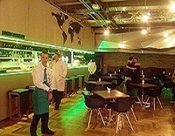
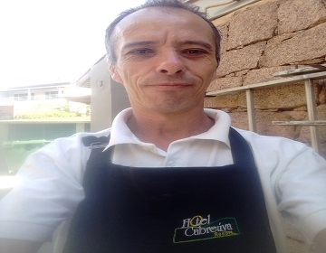
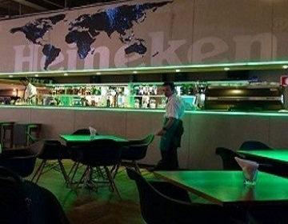
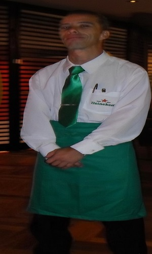

+55 11 91569 6867
markriqueza@gmail.com
São Paulo, Brasil
Profissional com vasta experiência em hotelaria, restaurantes e serviços de alimentação, incluindo passagem internacional pela Royal Caribbean. Destaque para o atendimento ao cliente de excelência, com habilidade para identificar necessidades e superar expectativas.
Inglês intermediário/avançado com competência para atuar em ambientes multiculturais e de alto padrão. Comprometido com a organização, higiene e a criação de experiências memoráveis para hóspedes e clientes.
Setembro 2016 - Presente (Freelancer)
Cargo: Garçom de Eventos e ajudante de cozinha
Novembro 2014 - Abril 2016
Cargo: Garçom e Host Bilíngue
Fevereiro 2008 - Outubro 2008
Cargo: Mess Attendant (Comissário de Mesa)



Senac Francisco Matarazzo
Escola de Aviação Civil Flight Brasil
USA International Cursos (2004-2007)